Tecnologías
 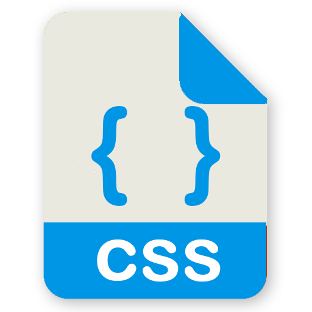
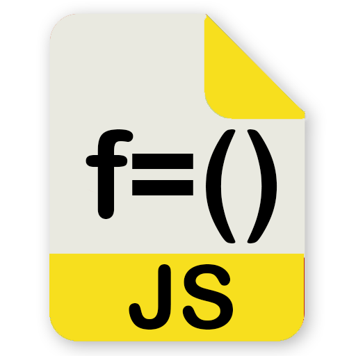
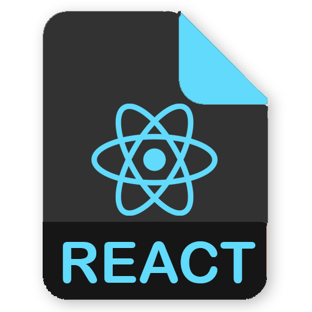
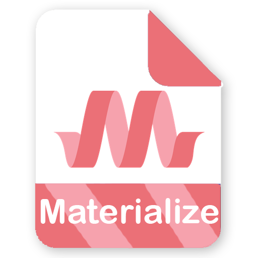
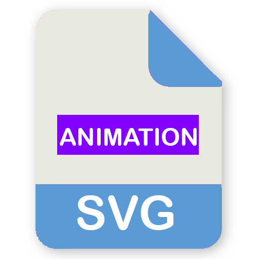
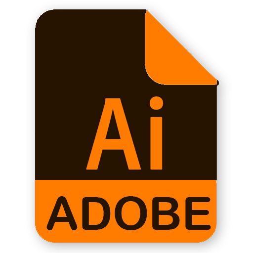
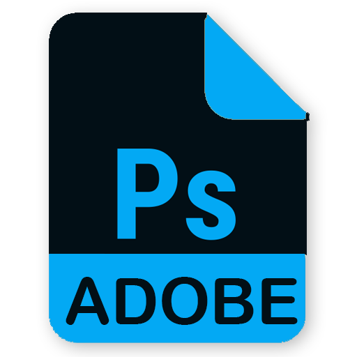
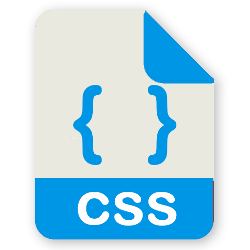
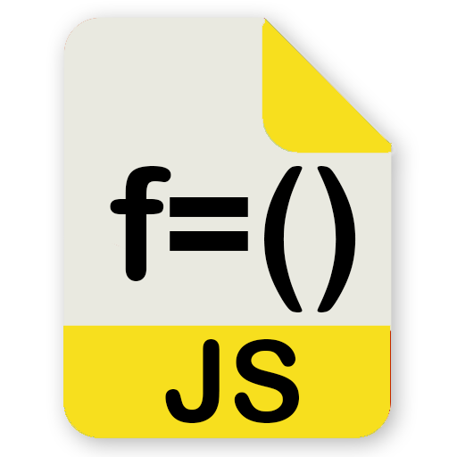
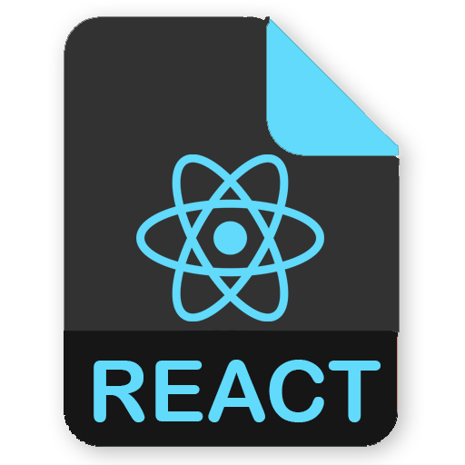
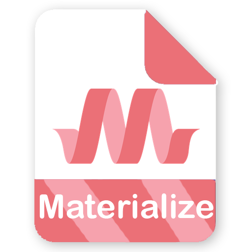
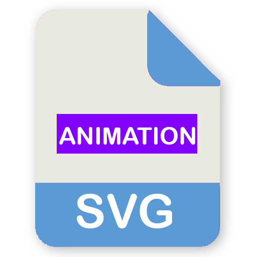
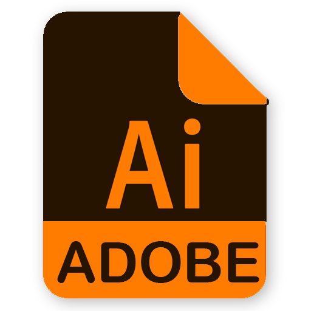
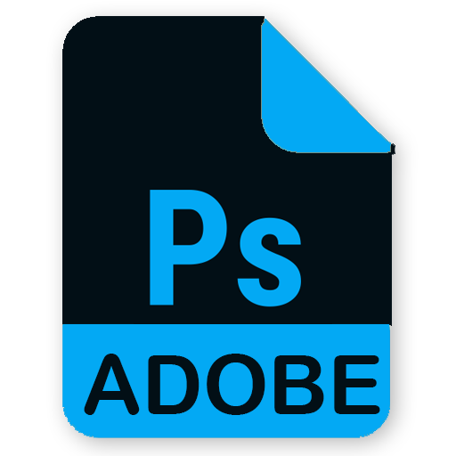
Sobre mi
La primera vez que conocí la programación fue por el World Edit de Warcraft en la secundaria porque siempre me han gustado los videojuegos y entender como funcionan, me llamo mucho la atención el área del diseño y en la preparatoria terminé como Tec. en Diseño Gráfico, después me formé como Tec. en Microcomputadoras y trabajé en Mantenimiento de ordenadores.
Actualmente soy estudiante de Ing. en Sistemas Computacionales 8° ciclo y me apasiona combinar mis habilidades de programación, matemáticas y diseño para ayudar a las personas.